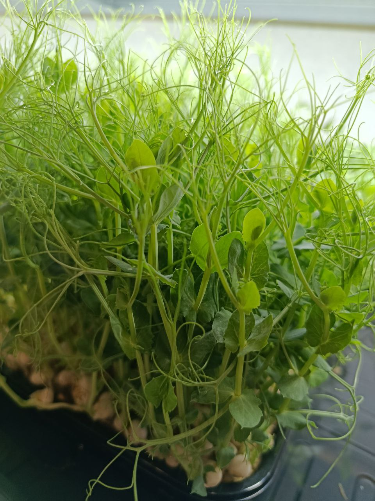

🌱 12 культур
От подсолнечника до кинзы — выберите вкус по настроению.
Курган · живая микрозелень в боксах
Выращена в Кургане. Не срезана: растёт у вас дома, вы срезаете сами. 12 культур. 150 ₽ за бокс. Доставка бесплатно от 3 боксов по всем районам Кургана.
Заказ и оплата через Telegram или Max. Адрес для самовывоза сообщим в мессенджере.

Живая зелень, локальное производство и честная цена — без посредников.
От подсолнечника до кинзы — выберите вкус по настроению.
Бокс с микрозеленью продолжает расти. Срезайте столько, сколько нужно, в любой момент.
От 3 боксов — бесплатно по всем районам Кургана.
150 ₽ за любой бокс. Без скрытых доплат и скидок.
12 культур. Все боксы по 150 ₽. Живая, не срезанная.
01
В каталоге — 12 видов микрозелени. Все по 150 ₽.
02
В Telegram или Max. Укажите культуры и количество боксов.
03
Бесплатно от 3 боксов по Кургану. Или самовывоз по договорённости.
04
Поставьте бокс на подоконник, поливайте — и срезайте свежую зелень, когда захотите.
Локальное производство в Кургане, живая зелень и честная цена.
Мы выращиваем микрозелень в Кургане. Каждый бокс — это живая зелень на субстрате, которая продолжает расти у вас дома.
12 культур Живая зелень Локально
Напишите нам в Telegram или Max — подскажем, что выбрать, и договоримся о доставке.
12 культур. Живая, не срезанная. 150 ₽ за бокс. Доставка бесплатно от 3 боксов по Кургану.
Подсказки, как лучше раскрыть вкус каждой культуры.
| Культура | Цена за бокс | Доставка |
|---|
Заказывайте любое количество боксов по единой цене — 150 ₽ за бокс. Доставка бесплатно от 3 боксов по всем районам Кургана. Культуры можно смешивать в любых пропорциях.
Напишите количество боксов и список культур — подтвердим заказ и дату доставки.
В боксе зелень продолжает расти. Несколько простых правил — и вы будете срезать свежие ростки до двух недель.
| Культура | Срок в боксе | Полив | Свет | Когда срезать |
|---|
Чем больше света, тем активнее растёт зелень. Зимой можно подсвечивать лампой.
Субстрат должен быть влажным, но не мокрым. Лейте по краю бокса.
Срезайте на 1–2 см выше субстрата — так зелень быстрее отрастёт снова.
Мойте только те ростки, которые собираетесь съесть сразу.
Простые блюда на 5–20 минут. Микрозелень добавляют в самом конце — от тепла она теряет вкус и пользу.
Разбираем пользу, уход и экономику микрозелени — без маркетинговых сказок. В каждой статье — краткое содержание и ключевые запросы.
Если не нашли ответ — напишите в чат-бот справа или в мессенджер.
Мы в Кургане. Свяжитесь с нами в удобном мессенджере — там же сообщим адрес для самовывоза.